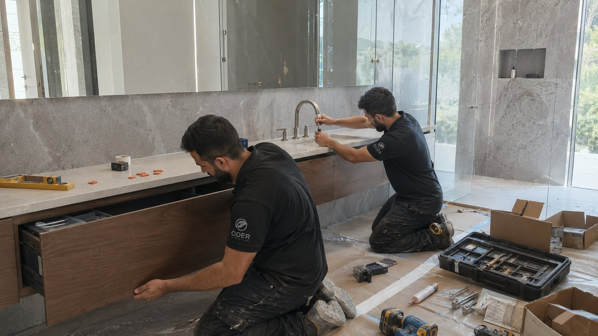

[Detay]
VAKA ÇALIŞMASI · [ŞEHİR] · [YIL]
[Proje adı]
[tek cümlelik sonuç]
[Bu projenin müşterinin problemi, tasarım yaklaşımı ve ölçülebilir sonucu hakkında 2–3 cümle.]

01 · İHTİYAÇ
[Müşterinin asıl ihtiyacı neydi?]
[Kullanım alışkanlığı, alan problemi, depolama, marka deneyimi, bütçe veya zaman kısıtını somut anlatın.]
02 · ÇÖZÜM
[Tasarım kararı ve uygulama yaklaşımı]
[Ölçü, malzeme, renk, aydınlatma, dolaşım ve özel üretim kararlarını açıklayın.]
[Detay]
[Detay]
03 · SONUÇ
[Mekânda ne değişti?]
[Önce/sonra farkını, kullanım kazanımını, teslim süresini ve varsa ölçülebilir sonucu yazın.]
“[Müşteri görüşü — yalnızca izin alınmış gerçek alıntı kullanın.]”
SİZİN PROJENİZ
[Benzer bir dönüşüm planlıyor musunuz?]
Alan fotoğrafı, şehir ve kısa ihtiyacınızı paylaşın.
WhatsApp’tan proje başlatın ↗